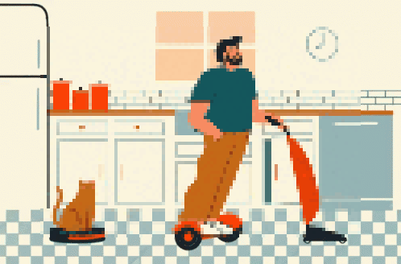

<div class="mission">
  
    <div class="container">
        
        <div class="text2">
            <div class="details">
              <br>Vous avez 20min devant vous pour vous consacrer au ménage
                du salon. <br> <br> Vous pouvez soit : <br><br> - Prendre la décision de passer l'aspirateur,
                 qui sera plus rapide et consommant 70kWh/an <br><br> - Choisir la solution
                 économique de passer le balais mais qui vous prendra plus de temps. <br> <br><br>
                 Accomplir cette mission dans les temps vous fera gagner <span>30$</span> supplémentaires.
            </div>
        </div>
        <div class="answers">
            <a>
                <p class="answer one" (click)="reward(30, -5)">Aspirateur</p>
            </a>
            <a>
                <p class="answer two" (click)="reward(10, 5)">Balai</p>
            </a>
        </div>
    </div>
    <div class="modal" id="modal">
        <div class="box">
            <div class="text">
                <h1>Information</h1>
                Les aspirateurs ne sont pas des appareils qui consomment beaucoup tant que vous n'avez<br>
                une surutilisation. Pour ne pas consommer trop, il vaut mieux privilégier le balai et <br>
                n'utiliser l'aspirateur qu'1 à 2 fois par semaine.
            </div>
            <a [routerLink]="['/missionFour']" routerLinkActive="active" >
                <p class="btn-next">Suivant</p>
            </a>
        </div>
    </div>
</div>
